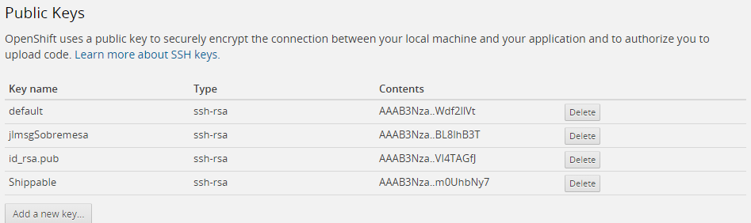

8. Integración continua y escalabilidad
8.1. Escalabilidad
Ya sabemos que OpenShift nos permite trabajar con diferentes tipos de gear con diferentes tamaños de memoría, y recientemente capacidad de proceso (small high cpu), pero la forma natural de aumentar la capacidad de proceso de las aplicaciones en PaaS y en OpenShift es el llamado escalado horizontal, o lo que es lo mismo, que nuestra aplicación se ejecute en múltiples servidores simultáneamente.

8.1.1. Autoescalado en OpenShift
Primero de todo aclarar que el que una aplicación sea escalable no implica que el autoescalado esté activado pero es que Openshift, por defecto gestiona automáticamente la escalabilidad de las aplicaciones, y lo hace de la siguiente forma:
-
Introduce un elemento en el gear de la aplicación denominado HAProxy y su función es la de balanceador de carga por software. Este componente analiza el tráfico web entrante y lo reenvía al gear de la aplicación.
-
Por defecto OpenShift asigna un máximo de 16 conexiones por gear. Cuando HAProxy detecta que se alcanza un 90% de ocupación de estas conexiones de forma sostenida, dispara un evento para la creación de forma automática de un nuevo gear que pueda ayudar a tratar la carga de trabajo creciente.
-
Mediante la herramienta rsync, OpenShift copia la configuración, el código y los ficheros empaquetados de la aplicación a un nuevo gear y arranca una nueva instancia del servidor de aplicaciones.
-
Si HAProxy detecta una bajada del número de conexiones por debajo del 50% del maximo, durante un tiempo predefinido, desencadena la eliminación de los gear replicados hasta que se alcance una situación estable o bien se alcance el mínimo de gears activos configurados.

Como vemos en la imagen, las aplicaciones escalables situan el backend en un gear independiente a las aplicaciones, en contraposición con las aplicaciones que hemos visto hasta ahora, en las que middleware y backend comparten gear. Esto es necesario para que todos los gear replicados puedan acceder a la base de datos concurrentemente. OpenShift elige la ubicación de la base de datos de forma automática, en función del tipo de aplicación.
HAProxy por defecto utiliza el algoritmo leastconn para repartir las conexiones entre los gear activos, y su forma de trabajar es asignar una nueva conexión al gear que tenga menos conexiones activas en ese momento. Este comportamiento se puede modificar, como veremos más adelante.
|
¿Y si hago cambios en el código de una aplicación escalable?
si hacemos un cambio en el código de una aplicación y lo subimos con un comando push de git, iniciaremos la compilación de la aplicación en el gear primario, y una vez compilada que se sincronicen los cambios entre todos los gears activos con el comando rsync.
|
Motivos para definir las aplicaciones como escalables por defecto
-
Mayor rendimiento al tener cada servidor y cada BD en un gear dedicado.
-
Aunque a priori no sea necesario, el configurar una aplicación como escalable permite que llegado el momento se pueda incrementar la capacidad de proceso.
-
Permite autoescalado y escalado manual, en el caso de que sepamos que va a producirse un aumento importante de la carga de trabajo.
-
No existe un comando que convierta una aplicación no escalable en escalable. Sólo se puede configurar como escalable en el momento de crear la aplicación.
Otras ventajas
-
Alta disponibilidad. Si una instancia de servidor falla, HAProxy repartirá la carga de trabajo entre el resto de instancias que estén operativas. No está documentado que haya ningún proceso automático que reinicie las instancias en caso de caída.
-
Replicación de la sesión: Si trabajamos con JBoss/Wildfly podemos beneficiarnos de la replica de la información de sesión entre los gears de la aplicación. Esto permite que si un servidor cae, la información de sesión se pueda recuperar de otra instancia. Para ello se utiliza una mecanismo de caché distribuida llamado Infinispan. Para habilitar este mecanismo hay que hacer un pequeño cambio en el fichero web.xml de las aplicaciones:
<web-app>
<distributable/>
</web-app>-
El uso de una caché distribuida permite compartir información entre nodos leyendo y escribiendo elementos con los métodos put/get.
@Resource(lookup="java:jboss/infinispan/container/cluster")
private CacheContainer container;
// A partir de este punto se pueden utilizar los métodos get() y put() para acceder y almacenar elementos en la caché.8.1.2. Definir una aplicación como escalable
Como ya hemos comentado, sólo es posible configurar una aplicación como escalable en el momento de su creación. Como siempre, tenemos dos opciones:
Desde la consola web:

Desde un terminal con la herramienta rhc:
rhc rhc app create <app> <cartridges>... -s8.1.3. Ajustar la configuración de escalado
Por defecto las aplicaciones utilizan un gear para la aplicación, más otro adicional si existe una base de datos. Para ajustar el número máximo y mínimo de gears debemos entrar en la configuración de nuestra aplicación y hacer click sobre los valores del apartado scales:

Alternativamente podemos utilizar el comando rhc donde habrá que especificar el cartridge concreto a escalar, la aplicación y el rango de valores.
rhc cartridge-scale <cartridge a configurar> -a <your app> --min <minimum> --max <maximum>| Si especificamos como máximo -1, estamos indicando que nuestro máximo será el número máximo de gears que nos permita nuestra cuenta. |
Una vez creada y en ejecución podemos ajustar manualmente el número de gears con los comandos:
rhc app scale-up <app>
rhc app scale-down <app>Por último, si queremos desactivar el autoescalado, y que seamos nosotros los únicos que gestionemos el número de gears debemos hacerlo a través de nuestra copia del repositorio Git. Debemos entrar en la ruta
cd <app>/.openshift/markers
touch disable_auto_scalingCon esto crearemos un fichero marcador, de nombre disable_auto_scaling, que debemos subir al repositorio con un commit y un push.
8.1.4. Monitorización del balanceador
HAProxy ofrece la posibilidad de consultar datos acumulados sobre la carga de trabajo que está gestionando nuestra aplicación. Podemos acceder a dicha información accediendo a la URL: http://<app>-<domain>.rhcloud.com/haproxy-status

De esta página nos interesa la segunda tabla, concretamente la fila local gear donde se muestra la información relativa al gear donde se ejecuta nuestra aplicación. En situaciones donde se requieran gear adicionales, aparecerán nuevas entradas en dicha tabla.

Cada gear se presentará en un color en función del estado en el que se encuentre.
8.1.5. Configuración de HAProxy
HAProxy mantiene su configuración en un fichero haproxy.cfg que se ha de modificar directamente en el gear principal de la aplicación. Para ello hay que iniciar una sesión ssh y acceder a la carpeta de configuración haproxy/conf:
$ rhc ssh <app>
$ cd haproxy/conf
$ vi haproxy.cfgEn este fichero podemos modificar entre otras cosas el algoritmo de reparto de carga. Si realizamos algún cambio en la configuración tendremos que reiniciar el cartridge correspondiente al balanceador.
$ rhc cartridge-restart --cartridge haproxy -a <app>8.2. DevOps
8.2.1. Introducción
El uso de metodologías ágiles en el desarrollo de aplicaciones es algo relativamente habitual en la actualidad. Estas metodologias favorecen las entregas parciales al usuario final y permite que éste haga cambios en los requermientos, en función de sus necesidades. El problema lo tenemos cuando en lugar de facilitar un producto instalable, resulta que debemos proporcionar la infraestructura necesaria para hacerlo funcionar, como es el caso de grandes empresas. Y es que tradicionalmente desarrollo y sistemas suelen ser dos bandos con intereses contrapuestos:
-
Desarrollo: quiero construir y publicar lo que me pide el negocio con agilidad.
-
Explotación: me miden por el coste y disponibilidad. No quiero riesgos.

Como ejemplo, en un banco podemos encontrarnos con que desde negocio se presiona para poner en marcha un nuevo servicio a clientes. Como respuesta, un equipo de desarrollo comienza a trabajar en el nuevo proyecto. Internamente pueden utilizar la metodología en cascada o incluso metodologías ágiles para proporcionar al usuario interno, distintas entregas del proyecto pero si hablamos de desplegar una aplicación en producción entonces es cuando comienzan las fricciones:
-
Desarrollo: Perciben demasiada burocracia, falta de permisos en producción (monitorización, incidencias), lentitud en los traspasos.
-
Explotación: Consideran que les falta información acerca de las aplicaciones que luego tienen que soportar, procedimientos de despliegue mal documentados o con errores, incertidumbre.
DevOps es un propósito de reconducir esa situación planteando la participación efectiva de los administradores de sistemas en el proceso de desarrollo de aplicaciones, utilizando las mismas metodologías ágiles que los desarrolladores.

Dentro de una organización se podría identificar la madurez de implantación de DevOps mediante el siguiente gráfico:

El escalón más básico consiste en la adopción de metodologías ágiles no sólo para la construcción del proyecto sino también para la definición de la infraestructura necesaria para su funcionamiento (infraestructura como script). El siguiente nivel sería la automatización de la integración de cambios en infraestructura y aplicación, y por último el despliegue continuo. La entrega continua implica que dejen de existir las versiones como tal de las aplicaciones y que las nuevas funcionalidades que se desarrollen pasen por un exahustivo proceso automático de validación y despliegue en producción.
Note: Continous Delivery es un concepto más genérico que Continuous Deployment. El primero hace referencia a todos los aspectos que permiten hacer despliegues por funcionalidad mientras que el segundo se refiere en sí al proceso técnico de ante un cambio en la aplicación, iniciar el despliegue en producción.
En resumen DevOps pretende mejorar la productividad potenciando el trabajo colaborativo dentre desarrolladores y técnicos de sistemas permitiendo que:
-
Desarrollo se concentre en la construcción de las aplicaciones.
-
Operaciones se concentre en la creación de entornos estandarizados.
8.2.2. DevOps y Cloud Computing
La gran ventaja de las grandes plataformas IaaS y PaaS frente a la informática tradicional es que resuelven gran parte del trabajo de estandarización de entornos y de procesos. Las prácticas que hemos comentado forman parte de los recursos que la propia arquitectura ofrece al administrador de sistemas con lo que simplifica su utilización:

En el caso concreto de OpenShift, ya sabemos que tanto la creación de gears como cualquier aspecto de configuración es susceptible de automatizarse mediante script y que en su concepción más básica se utiliza el despliegue continuo. A continuación veremos como aplicar también integración continua, pruebas automatizadas y cómo poder definir una build pipeline.
| Las herramientas de integración continua, automatización de pruebas, metodologías por si mismas justificarían varias sesiones con lo que hablaremos de los aspecto más importantes y nos centraremos en su implementación en OpenShift. |
8.2.3. Integración continua (CI) con Jenkins
Entendemos por integración continua un sistema que ejecuta, ante un cambio en una aplicación, la compilación y ejecución automática de un conjunto de pruebas. Si la aplicación compila correctamente y supera las pruebas, la aplicación se considera apta para el despliegue (habitualmente en un entorno desarrollo o integración), pero por el contrario, si no se supera, se deja constancia del error y no se altera la versión de la aplicacion que actualmente está ejecutándose en el siguiente entorno de trabajo.
Para aplicar integración continua en un proyecto, necesitaremos herramientas ya conocidas como control de versiones (Git, SVN, etc.) , compilación (desde javac hasta Maven, Gradle) y ejecución de pruebas, pero también necesitaremos una aplicación denominada servidor de CI. Por defecto OpenShift utiliza Jenkins, aunque no nos impide que instalemos cualquier otro producto.
El uso de Jenkins está muy integrado en OpenShift en tanto desde la consola web basta con decir que indicar que queremo utilizar integración contínua para una de nuestras aplicaciones, para que el sistema configure los servicios necesarios para comenzar a trabajar con Jenkins.
Al activar Jenkins se creará un nuevo gear específico para el servidor de CI y se configurará una tarea específica para compilar la aplicación a través de Jenkins. Al crear el servidor Jenkins se nos informa de una URL para acceder a su configuración y un usuario/password para poder identificarnos como administrador.
Introducción a Jenkins
En el caso de Jenkins podemos entenderlo como una herramienta de ejecución y monitorización de jobs, en un sentido más amplio que la compilación y despliegue de aplicaciones. Si accedemos a la consola de Jenkins, nos encontraremos una pantalla similar a la siguiente:
En la parte principal de la pantalla veremos una tabla en la que aparece una única entrada con el mismo nombre que nuestra aplicación y una serie de métricas, inicialmente sin datos. Lo primero que hay que entender es que para Jenkins, cada aplicación que se construye se denomina tarea y cada vez que se active dicha tarea se genera una compilación. Si instalamos Jenkins en nuestra propia infraestructura debemos configurar entre otras cosas:
-
Rutas de las distintas herramientas que intervienen en la construcción de los proyectos.
-
Seguridad básica de Jenkins.
-
Las tareas necesarias para compilar.
Con OpenShift tenemos la ventaja de que estas tres cosas ya están preconfiguradas y listas para funcionar desde el primer momento. Si pulsamos en el icono de "Programar una ejecución", activaremos manualmente la tarea y comenzaremos a construir la aplicación. En la parte izquierda de la pantalla se mostrará una barra de progreso donde podemos ver el avance de la construcción y si pulsamos en Console Output podremos ver exactamente la salida por consola del script de compilación.

Una de las características más importantes de Jenkins es que almacena toda la información relativa a la construcción de una aplicación (compilación, pruebas, despliegue), no sólo la muestra en tiempo real.
Si dentro de una tarea pulsamos en Configurar se nos muestra un formulario donde se puede parametrizar casi cualquier aspecto de la construcción de la aplicación. Entre otros aspectos:
- Definición y descripción de la tarea
-
Datos identificativos del proyecto.
- Builder a utilizar
-
Al activarse una tarea se crea dinámicamente un nuevo gear que se encarga específicamente de la construcción de la aplicación.
- Disparadores de ejecuciones
-
Podemos configurar si queremos que nuestra tarea se active mediante un script, al finalizar otras tareas, periódicamente o cuando se produzca un cambio en un repositorio.
- Ejecución
-
Es un area donde se muestra el sh que se va a ejecutar y se nos permite su total edición. Post Ejecución: Podemos definir comandos adicionales que se ejecuten al finalizar correctamente una tarea.
Una vez se haya ejecutado una tarea, veremos que en la pantalla principal aparecen dos iconos asociados a la tarea. El primero de ellos indica si la última compilación ha sido OK o KO, y el segundo muestra una tendencia, en forma de icono de "previsión meteorológica". Si todo va bien, se muestra un icono soleado, pero si se van produciendo errores de compilación, el icono va cambiando hasta mostrar una "tormenta".
Por último, comentar que Jenkins se puede extender mediante plugins y existe un conjunto muy numeroso de ellos por lo que es un servidor de CI que se puede adaptar a multitud de proyectos. Existen los plugin de tipo publisher que permiten mostrar información extendida sobre las tareas ejecutadas de forma visual. Es el caso del plugi de Cobertura que muestra gráficamente el grado de cobertura de las pruebas unitarias definidas para una aplicación.
Otro plugin interesante es el Pipeline plugin que permite representar un conjunto de tareas interrelacionadas de forma visual. Concretamente se suele utilizar en para representar los Deployment Pipeline de los procesos de Continuous Delivery.
Uso de Jenkins en OpenShift
Por defecto Jenkins se configura utilizando un Gear para el propio servidor y otro Gear "esclavo" para cada trabajo de compilación. Esto puede ser una limitación muy importante en el caso de trabajar con el plan gratuito pero veremos formas de paliar este problema. La ventaja de utilizar un Gear específico para compilar es que no estamos parando la aplicación en ningún momento, ni consumiendo parte de sus recursos en la construcción de la aplicación, y si se produce un fallo en el proceso no llega a afectar a la aplicación en ejecucuión.
Los eventos que se suceden cuando un usuario hace un cambio sobre una aplicación que trabaja con CI en OpenShift son los siguientes:
-
El desarrollador hace push de un cambio al repositorio de la aplicación.
-
Jenkins recibe una notificación de que se ha hecho un cambio en el repositorio de fuentes.
-
A continuación Jenkins crea un gear esclavo para construir la aplicación. Desde ese momento el nuevo gear se puede ver tanto con el comando rhc domain show como accediendo a la consola web. El nombre de la aplicación será el nombre original añadiéndole "bldr" (builder). Este mecanismo tiene una limitación y es que los 28 primeros caracteres de las aplicaciones deben ser únicos o existe riesgo de que en lugar de crear un builder nuevo, se comparta entre las aplicaciones coincidentes.
-
Jenkins ejecuta la tarea de compilación sobre el gear.
-
Se descarga el código fuente del repositorio git y mediante el comando rsync se copian las librerías asociadas al proyecto que existieran en la aplicación.
-
Se ejecuta el script ci_build.sh que inicia el proceso de compilación en la máquina builder.
-
Se ejecutan los script .openshift/action_hooks/pre_build definidos para la aplicación antes de la construcción.
-
Se construye la aplicación ejecutando todos los pasos de construcción definidos en la tarea de Jenkins.
-
Se ejecutan los script .openshift/action_hooks/build definidos para la aplicación después de la construcción.
-
-
Ejecución de pasos adicionales post compilación que el desarrollador pueda haber definido.
-
-
Una vez construida la aplicación con éxito, Jenkins solicita la parada de la aplicación en ejecución.
-
Mediante rsync se copian los nuevos artefactos compilados al gear de la aplicación.
-
Jenkins inicia de nuevo el gear.
-
Se archiva toda la información del proceso de build en Jenkins.
Pasados 15 minutos sin actividad el builder se destruye automáticamente aunque la información de los procesos de build se mantienen en el gear principal de Jenkins.
Además de poder acceder a la consola de las build para analizar el proceso de construcción de una aplicación, en el caso de que algo no funcione como debe, tenemos a nuestra disposición el log de Jenkins, el cual podemos consultar mediante el comando habitual de OpenShift:
rhc tail jenkinsPor su parte, si la aplicación no se despliega correctamente podemos consultar el log del gear de la aplicación.
rhc tail <app>Por último, mencionar que la construcción de la aplicación se realiza con los parámetros por defecto de OpenShift (mvn -e clean package -Popenshift -DskipTests'), por lo que por defecto no se ejecutarán ningún caso de prueba de JUnit u otras herramientas que queramos utilizar. Para poder habilitarlas, dentro del código de la build hay una sección con un comentario:
# Run tests hereA continuación podríamos añadir la ejecución de pruebas unitarias y cobertura del código:
mvn test cobertura:coberturaSi invocamos el comando cobertura necesitaremos el plugin de Cobertura para Jenkins para poder integrar la información de cobertura en la información de la build.
8.2.4. Como trabajar contra un repositorio de Bitbucket
Ya conocemos cómo OpenShift es capaz de instalar Jenkins y crear una tarea de construcción y despliegue por nosotros. No obstante, nuestras necesidades pueden ser algo más complejas o podemos necesitar ejecutar pasos adicionales en el proceso de construcción. Para ello Jenkins nos permite editar las tareas o bien crear una nueva tarea desde cero.
Por ejemplo, podemos querer trabajar con un repositorio en Bitbucket como repositorio principal, en lugar del asociado al gear. La modificación aparentemente es sencilla pues bastaría con edita la información que se muestra en la sección de "Configuración del origen del código fuente":

Pero si lo hacéis os encontraréis con errores de acceso y de permisos al escribir en rutas del gear.
Tipo de credenciales
Lo primero es comentar las tres formas de autenticarse más habituales contra repositorios:
- Público (sin credenciales)
-
Los repositorios de GitHub gratuitos son todos públicos, pero como ya sabéis en BitBucket se pueden tener públicos o privados
- Usuario/password
-
Donde Jenkins utilizará nuestras claves personales del repositorio. ¿Que ocurre si tenemos que cambiar de password?
- Claves RSA
-
Mediante el sistema de clave pública/clave privada con lo que lo que se identificará será la propia instancia de Jenkins ante el repositorio de BitBucket o GitHub.
Para poder utilizar credenciales de tipo usuario/password es necesario instalar un componente adicional, el plugin de Bitbucket para Jenkins, pero el método por claves RSA ni siquiera os funcionará con este plugin pues la política de permisos de OpenShift sobre los gear impide que tengamos acceso a la carpeta .ssh donde se guardan las credenciales de usuario y al fichero known_hosts donde se almacenan las máquinas a las que nos hemos conectado. Para poder acceder a otros repositorios con claves RSA, se puede utilizar un catridge alternativo que ubica esta información en $OPENSHIFT_DATA_DIR.
Vamos a proponer una solución que contempla ambos enfoques pero requiere una configuración adicional.
Jenkins "Alternativo"
En lugar de dejar a OpenShift la responsabilidad de crear una instancia de Jenkins, la crearemos nosotros en primer lugar, pero utilizando un cartridge de terceros:
rhc create-app jenkins jenkins-1 "https://cartreflect-claytondev.rhcloud.com/reflect?github=majecek/openshift-community-git-sshEste cartridge tiene la particularidad de trasladar a la carpeta $OPENSHIFT_DATA_DIR/git-ssh toda la información relativa a claves RSA con lo que podremos trabajar con libertad. La estrategia es definir una variable de entorno llamada GIT_SSH que permite especificar un script de tratamiento de credenciales, que entre otras cosas puede especificar la ubicación de las credenciales.
| Dado que en gear sólo tenemos permisos para trabajar en carpetas específicas Jenkins está configurado para obtener la identificación del usuario de la carpeta $OPENSHIFT_DATA_DIR en lugar de la propia del usuario como ocurriría en una instalación local. Esto se hace configurando la variable de entorno GIT_SSH para que apunte a un shellscript que lea de otra ubicación las claves RSA. En el caso de Openshift se encuentra en /usr/libexec/openshift/cartridges/jenkins/bin/git_ssh_wrapper.sh. Este mismo mecanismo se utiliza en una instalación local de Jenkins para ejecutar tareas de Jenkins como distintos usuarios. |
Si queremos trabajar con claves RSA, todavía tenemos pendiente el crearlas, así que accederemos a la carpeta OPENSHIFT_DATA_DIR/git-ssh y ejecutaremos:
ssh-keygenDeberemos especificar en qué ubicación guardar la clave privada. Especificaremos un nombre de fichero con su ruta completa:
/var/lib/openshift/547ae964e0b8cdbb49000092/app-root/data/git-ssh/id_rsa
The key fingerprint is:
7d:f1:25:07:da:a7:e3:b0:c5:e0:e7:82:27:dc:2d:33 547ae964e0b8cdbb49000092@ex-std-node44.prod.rhcloud.com
The key's randomart image is:
+--[ RSA 2048]----+
| . |
| o . |
| + o +|
| . . = * |
| S . + B |
| . + O . |
| + E + |
| o = |
| |
+-----------------+Por último, tenemos que avisar a BitBucket de que vamos a descargar código mediante Jenkins. para ello debemos añadir la clave RSA pública asociada a Jenkins dentro de las Deployment key de Bitbucket.
Ahora ya estamos en condiciones de autenticarnos en repositorios privados tanto por usuario/password como por claves RSA.
BitBucket Plugin
Gracias a este plugin es posible tener un mayor control de cómo se comunica Jenkins con BitBucket, pero no sólo sirve a la hora de acreditarnos, sino que nos permite que ante un cambio en Bitbucket se dispare la ejecución de una tarea Jenkins.
Si editamos una tarea de Jenkins tras instalar el plugin nos aparecerá una nueva forma de "disparar" la ejecución de la tarea.

Por la parte de Bitbucket hay que añadir un nuevo elemento que avise a Jenkins cuando hay un cambio en el repositorio. Debemos añadir un Hook y lo más sencillo, es especificar uno de tipo POST, es decir una llamada http directa al servidor Jenkins:

La URL a indicar es la URL de Jenkins añadiendo la ruta /Bitbucket-hook/
Por último tenemos que dar de alta las credenciales concretas que vamos a utilizar para autenticarnos. Para ello, en la configuración de la tarea, en la sección del repositorio de código fuente, aparece un desplegable que nos permite especificar qué credenciales queremos utilizar para identificarnos. Como ya sabemos, estas credenciales pueden ser un usuario/password, o especificar la ruta a la clave privada RSA, o directamente "pegar" dicha clave en el formulario de configuración.

También tenemos a nivel del menú principal de Jenkins, una nueva opción "Credentials" para gestionar estas credenciales.
Por último, comentar que a la fecha de la redacción de estos apuntes no funciona correctamente la descarga de código del repositorio de Bitbucket, en el sentido de que el comando de compilación gear build no sabe exactamente qué rama hay que compilar. La solución pasa por forzar a utilizar una rama concreta. En nuestro ejemplo master. Hay que forzar a descargar el contenido a la rama local master:

Y luego antes de compilar, especificar sobre qué rama vamos a trabajar. Hay que editar el código de la build:
# Build/update libs and run user pre_build and build
GIT_BRANCH=master # <-- Forzar a compilar sobre la rama master
gear build
# Run tests here| La misma tarea que estamos presentando para trabajar contra Bitbucket la podríamos utilizar para compilar proyectos alojados en GitHub. Bastaría con instalar el plugin asociado a GitHub, configurar el repositorio remoto con la clave pública de Jenkins y cambiar la URL de Hook por: https://[url jenkins]/github-webhook/ con content type application/x-www-form-urlencoded. En GitHub no se observa el problema de las ramas descrito para el plugin de Bitbucket. |
8.2.5. Alternativas a Jenkins
Una de las principales ventajas de utilizar Jenkins integrado en OpenShift es que de forma automática tenemos un sistema que implementa el despliegue continuo. Sin embargo si utilizamos el plan gratuito podemos encontrarnos con sólo nos deja un único gear para poder desplegar nuestras aplicaciones. Una medida que puede paliar el problema es configurar el propio gear de Jenkins como un builder, de modo que tanto la ejecución del servidor como los procesos de compilación correrían en el mismo gear. Esto puede ser factible para proyectos pequeños pero si nos excedemos de los límites de almacenamiento o consumo de memoria, podemos tener errores inesperados.
La otra alternativa es utilizar un servidor de CI de otro proveedor en Cloud. Travis, Shippable y CodeShip son soluciones que funcionan con OpenShift. La estrategia con estos servidores es clonar desde un repositorio principal el código fuente, aplicar las validaciones que consideremos oportunas, y si todo es correcto, hacer un push al repositorio del gear en el que queremos desplegar.

En el caso concreto de Shippable, nos podemos identificar mediante Oauth Con las cuentas de Bitbucket o GitHub e inmediatamente acceder a nuestros proyectos, pero antes de poder desplegar hacen falta dos cosas:
-
Añadir la clave pública de Shippable dentro de las claves públicas admitidas de OpenShift, en la pestaña Settings:
 -
Definir un script de construcción y despliegue. En el caso de Shippable, se denomina shippable.yml y se encuentra en la carpeta raíz del proyecto:
language: java
jdk:
- openjdk7
env:
global:
- JBOSS_HOME=/tmp/jboss-as-7.1.0.Final
- JBOSS_SERVER_LOCATION=http://download.jboss.org/jbossas/7.1/jboss-as-7.1.0.Final/jboss-as-7.1.0.Final.tar.gz
- OPENSHIFT_REPO=ssh://54566a5a5973ca89760000cf@jbossas-djbyte.rhcloud.com/~/git/jbossas.git/
before_install:
- if [ ! -e $JBOSS_HOME ]; then curl -s $JBOSS_SERVER_LOCATION | tar zx -C /tmp; fi
- git remote -v | grep ^openshift || git remote add openshift $OPENSHIFT_REPO
before_script:
- mkdir -p shippable/testresults
- mkdir -p shippable/codecoverage
script:
- mvn clean cobertura:cobertura
- mvn test -Parq-jbossas-managed
after_success:
- git push -f openshift $BRANCH:master8.2.6. Deployment pipeline
Con los elementos que conocemos ya podríamos definir una estrategia de construcción y despliegue para una aplicación en cloud. Esta estrategia podrá ser más o menos compleja en función del tipo de aplicación y el número de partes que intervengan en el proceso. Además del uso que hemos visto de herramientas de CI como Jenkins o Shippable, donde lo que hacemos es básicamente mover código fuente o desplegar aplicaciones ya compiladas en gears, también podemos utilizar el propio api REST de OpenShift para crear, desplegar y destruir gears como parte del ciclo de construcción de una aplicación. En las referencias se cita un enlace donde se explica el plugin OpenShift Deployer que utilizando el api REST permite integrar dentro del proceso de despliegue estas tareas.
También se incluye en las referencias algunos enlaces con best practices sobre cómo aprovechar OpenShift para implementar un deployment pipeline. En todas ellas lo habitual suele ser definir varios dominios, uno por cada entorno de trabajo que vayamos a definir. Una posible división entre entornos sería:
- Desarrollo
-
Entorno al que los programadores tienen acceso completo y pueden subir sus cambios desarrollados en local cuando consideran que con correctos y se pueden integrar con la aplicación.
- Test
-
De forma diaria, se ejecuta una tarea de Jenkins que trae las modificaciones de código realizadas en Desarrollo, recompila la aplicación y ejecuta todas las pruebas automatizadas. También este entorno sirve para que el equipo de testing pueda realizar sus pruebas. Sobre este entorno se podrían realizar pruebas de aceptación por parte de usuarios, o bien separarlas en diferentes entornos.
- Preproducción o Stage
-
Cuando el equipo de testing da el ok a estas pruebas, manualmente se traspasan los cambios de Test a Preproducción. Todo el código de preproducción se considera código validado y preparado para pasar a producción. Sin embargo en este entorno el equipo de Operaciones puede realizar las últimas pruebas de cara a su puesta en producción.
- Producción
-
Cuando se considere que la nueva versión puede publicarse, alguien desde operaciones iniciará el proceso de traspaso desde preproducción hasta producción manualmente, quedando la nueva aplicación disponible a los clientes.
En entornos estáticos tradicionales, se suele tener un servidor por entorno, lo cual puede condicionar las pruebas que se realicen sobre una aplicación ya que en proyectos grandes se pueden estar probandos distintas features simultáneamente y ser incompatibles dichas pruebas. O también es habitual que se quieran promocionar determinadas funcionalidades pero no otras hasta una fecha pactada con el cliente. Gracias a las herramientas (Git, Jenkins, OpenShift) podemos crear servidores de pruebas temporales para ramas específicas de un proyecto, que se validen de forma independiente, y que cuando llegue el momento previo a su despligue en producción, se integren en Preproducción.
8.3. Referencias
-
Application Scaling https://www.OpenShift.com/developers/scaling
-
Scaling in action https://www.openshift.com/blogs/scaling-in-action-on-openshift
-
Autoescalado en OpenShift https://blog.openshift.com/how-to-host-your-java-ee-application-with-auto-scaling/
-
Continuous delivery http://www.xebia.in/assets/files/whitepaper_xebia_continuous_delivery.pdf
-
Continuous delivery using pipelines http://www.methodsandtools.com/archive/archive.php?id=121
-
Openshift development pipeline https://blog.openshift.com/elevating-your-development-pipeline-to-the-cloud-with-openshift/
-
Administering Jenkins https://wiki.jenkins-ci.org/display/JENKINS/Administering+Jenkins
-
Cómo subar Sonar en OpenShift http://majecek.wordpress.com/2013/12/06/how-to-run-sonarqube-4-0-on-openshift/
-
Desplegar en OpenShift desde un jenkins externo: https://blog.openshift.com/deploy-openshift-external-jenkins-instance/
-
Estrategias de Release Management: https://blog.openshift.com/release-management-in-the-cloud/
-
Development pipeline en cloud: https://blog.openshift.com/elevating-your-development-pipeline-to-the-cloud-with-openshift/
-
Ticket Monster http://www.jboss.org/ticket-monster/
-
Blog de Arun Gupta http://blog.arungupta.me
8.4. Ejercicios de Integración continua y escalabilidad
En esta sesión vamos a trabajar con la aplicación Ticket Monster. Esta aplicación es una plataforma de venta de entradas por internet y Red Hat la publica con fines educativos y como demostracíon de distintas tecnologías. Para más información en la sección de referencias hay un enlace con documentación acerca de esta aplicación.

Por lo pronto vamos a descargarnos el código de GitHub correspondiente a la rama de código dirigida a WildFly. Concretamente ejecutaremos:
git clone -b WildFly https://github.com/jboss-developer/ticket-monster.gitUna vez descargado lo compilaremos con los siguientes parámetros:
cd ticket-monster/demo
mvn clean package -Ppostgresql-openshiftLa compilación generará un fichero ticket-monster.war.
8.4.1. Despliegue de una aplicación escalable (0.2 Puntos)
Para este ejercicio se pide:
-
Crear una aplicación OpenShift de nombre ticketmonster que sea escalable y que utilice una base de datos PostgreSQL.
-
Desplegar el war compilado como aplicación.
-
Verificar que la aplicación funciona correctamente.
8.4.2. Prueba de Estrés ( 0.4 puntos)
En este ejercicio vamos a comprobar cómo funciona el mecanismo de autoescalado simulando una carga de trabajo elevada. Para ello, lo primero es instalar una herramienta de pruebas de estrés: ApacheBench.
$ sudo apt-get install apache2-utilsLa aplicación Ticket monster, tiene una sección de administración generada mediante JBoss Forge y de la cual también expone una interfaz REST para manipular los datos de la aplicación. Vamos a lanzar una consulta de un servicio REST de forma masiva, con el fin de generar un número de sesiones concurrentes lo suficientemente elevado como para que OpenShift dispare la activación de un segundo gear.
| Recordad que al configurar una aplicación como escalable ya consumimos 2 gear, así que como mucho, vamos a poder incorporar un tercero. |
La forma de lanzar una prueba de carga contra un servicio REST de consulta (GET) sería la siguiente:
$ ab -n 50000 -c 50 -s 100 http://ticketmonster-jlzamora.rhcloud.com/rest/sectionsDonde "n" es el número de peticiones a realizar, "c" es el número de peticiones concurrentes y "s" es el tiempo máximo de espera por petición.
Si nos conectamos mediante SSH al gear de la aplicación, podemos consultar el log del balanceador en la ruta $OPENSHIFT_LOG_DIR/haproxy_ctld.log donde podremos ver los eventos de creación/destruccion de gears en función de la carga de trabjo. Adicionalmente en la consulta web de HAProxy también podemos ver el número de gears que tenemos en funcionamiento y su carga de trabajo.
Para este ejercicio se pide:
-
Ejecutar la prueba de estrés y verificar que pasado un tiempo se crea automáticamente un gear adicional.
-
En cuanto aparezca el nuevo gear, finalizar la prueba de carga mediante CTRL+C al comando de ApacheBench. Guardar los datos estadísticos de rendimiento que ha generado la herramienta en un fichero llamado 1Gear.txt.
-
Comprobar que pasado un tiempo, se elimina automáticamente el segundo gear.
-
Obtener una copia del fichero haproxy_ctld.log como entregable.
-
Forzar a que la aplicación ticketmonster trabaje siempre con dos gears.
-
Repetir la prueba de carga hasta un número de ejecuciones similar a la realizada en el paso 2, y almacenar las estadísticas de ApacheBench en un fichero llamado 2Gear.txt.
| Si os interesa realizar pruebas de estrés, además de ApacheBench podéis utilizar JMeter para realizar pruebas de estrés. Se trata de una herramienta mucho más completa pero algo más complicada de sacar partido. Como SaaS, tenéis la herramienta BlazeMeter, que permite generar simulaciones de carga de trabajo de forma sencilla pero también permite ejecutar pruebas de estrés de JMeter. La pega es que el acceso gratuito permite generar un volúmen de peticiones limitado. |
8.4.3. Integración continua (0.2 puntos)
Esta vez vamos a trabajar sobre una aplicación Java EE 7 de ejemplo muy sencilla, pero sobre la que aplicaremos los distintos conceptos que hemos aprendido sobre integración continua y despliegue continuo. En este primer ejercicio se pide crear una nueva aplicación OpenShift denominada bigbang y desplegar sobre ella la aplicación de ejemplo, alojada en GitHub. Para ello eliminaremos los fuentes por defecto y haremos un _pull del siguiente repositorio de GitHub:
git rm -rf src/ pom.xml
git commit . -m "Eliminar aplicación de ejemplo "
git remote add javaee7 https://github.com/Djbyte1977/bigbang.git
git pull javaee7 master
git push origin masterUna vez desplegada la aplicación, comprobad que funciona correctamente. La aplicación expone un servicio REST del que podéis obtener una lista de personas o el nombre de una persona concreta preguntando por su id:
http://[URL aplicación Openshift]/resources/persons
http://[URL aplicación Openshift]/resources/persons/idLo siguiente será habilitar integración continua para el proyecto y modificar la clase PersonDatabase:
public void init() {
persons = Arrays.asList(
new Person("Penny"),
new Person("Leonard"),
new Person("Sheldon"),
new Person("Amy"),
new Person("Howard"),
new Person("Bernadette"),
new Person("Raj"),
new Person("Priya"),
// Añadir una persona a la lista
new Person("Stu"));
}Por último, hacer un push del cambio y verificar que la aplicación se compila primero en Jenkins antes de desplegarse. Ahora, cada vez que hagamos un push, la aplicación se compilará previamente, y si se produce algún fallo, el despliegue no se realizará, por tanto tenemos un nivel adicional de tolerancia ante fallos.
| Si ejecutamos la compilación por primera vez, es posible que se produzca algún error de comuncaciones entre nuestra consola y el gear Builder. Normalmente esto es debido a que son instancias gratuitas y que el primer arranque es más costoso. Si lo intentáis por segunda vez os debe funcionar. |
8.4.4. Pruebas con Arquillian (0.4 puntos)
El siguiente paso es incluir una serie de pruebas que nos garanticen no sólo que el código compila sino que el funcionamiento de la aplicación será el esperado. Para ello incorporaremos a la aplicación un par de casos de prueba implementados con Arquillian. Esta herramienta permite diseñar pruebas unitarias y pruebas integradas que se pueden ejecutar directamente sobre un servidor de aplicaciones, permitiendo realizar pruebas en condiciones muy cercanas a las del funcionamiento real que tendrá la aplicación.
Para dotar al proyecto de estas capacidades utilizaremos Forge dentro de la carpeta del proyecto. Ejecutaremos:
$ forge
[bigbang]$ addon-install-from-git --url https://github.com/forge/addon-arquillian.git
//Como Framework de pruebas elegid JUnit y elegir el contenedor que queráis utilizar.
[bigbang]$ arquillian-setup
[bigbang]$ arquillian-container-setupForge no sólo se utiliza para crear nuevos proyectos sino que permite modificar proyectos ya existentes. En este caso hemos añadido un plugin a Forge para poder trabajar con Arquillian y hemos añadido a nuestra aplicación la configuración necesaria para utilizar distintos contenedores. Cada contenedor está especializado en interactuar con un tipo de servidor de aplicaciones, en distintas configuraciones. En el caso de WildFly tenemos:
- arquillian-wildfly-remote
-
Que trabaja contra un servidor WildFly que se esté ejecutando en una máquina, por defecto en localhost:8080
- arquillian-wildfly-managed
-
En este caso Arquillian se encarga de parar y arrancar el servidor y sólo debemos indicarle en qué carpeta se encuentra, bien a través de la variable de entorno JBOSS_HOME o bien en el fichero de configuración de arquillian (arquillian.xml).
| Por defecto estos plugins siempre van a trabaja contra la última versión de WildFly con lo que si la aplicación se ejecutará en una versión distinta, habría que modificarla en el fichero pom.xml |
Para trabajar con OpenShift la aproximación es diferente pues en principio no se puede iniciar un proceso servidor dentro de un gear fuera de los puertos autorizados. Por tanto no es sencillo el utilizar uno de los modos anteriores pues la instancia de WildFly no tendrá permisos para abrir los puertos que necesita para funcionar.
Por fortuna existe un contenedor específico para OpenShift, arquillian-openshift-express, que permite utilizar instancias de JBoss/WildFly ejecutadas dentro de un gear.
Como hemos seleccionado la opción de openshift-express, ya tenemos nuestro proyecto preparado con los perfiles adecuados para poder utilizarlo. Faltaría modificar el fichero arquillian.xml dentro de la carpeta de test/resources indicando sobre qué gear vamos a lanzar las pruebas. En nuestro caso, como sólo contamos con tres gear disponibles vamos a utilizar el mismo gear que el despliegue final.
| En condiciones de "producción" necesitaremos 4 gear: 2 para Jenkins, uno para el servidor de Test y otro para el servidor de producción. |
Añadiremos la configuración del gear sobre el que vamos a probar:
<!-- Datos de ejemplo, cambiar por los vuestros-->
<container qualifier="arquillian-openshift-express">
<configuration>
<property name="namespace">jlzamora</property>
<property name="application">bigbang</property>
<property name="libraDomain">rhcloud.com</property>
<property name="sshUserName">5479d3685973ca8081000033</property>
<property name="login">jl_msg@hotmail.com</property>
<property name="deploymentTimeoutInSeconds">1000</property>
<property name="disableStrictHostChecking">true</property>
</configuration>
</container>| En lugar de indicar valores constantes, si vamos a ejecutar las pruebas desde jenkins podemos utilizar la sintaxis: ${env.NOMBRE_VARIABLE} para leer el valor de una variable de entorno. |
También es necesario hacer algunos cambios manualmente sobre el pom.xml por ¿fallo? de la versión 2.12 de Forge:
-
Añadir el repositorio de JBoss para poder descargar las últimas versiones de los plugin:
<repository>
<id>jboss-public-repository-group</id>
<name>JBoss Public Repository Group</name>
<url>http://repository.jboss.org/nexus/content/groups/public/</url>
<layout>default</layout>
<releases>
<enabled>true</enabled>
<updatePolicy>never</updatePolicy>
</releases>
<snapshots>
<enabled>true</enabled>
<updatePolicy>never</updatePolicy>
</snapshots>
</repository>-
Añadir dependencias para crear los clientes REST utilizados en las pruebas:
<dependency>
<groupId>org.jboss.resteasy</groupId>
<artifactId>resteasy-client</artifactId>
<version>3.0.10.Final</version> <!--Sustituir por la versión que utilice WildFly -->
<scope>test</scope>
</dependency>
<dependency>
<groupId>org.jboss.resteasy</groupId>
<artifactId>resteasy-jaxb-provider</artifactId>
<version>3.0.10.Final</version> <!--Sustituir por la versión que utilice WildFly -->
<scope>test</scope>
</dependency>Además de incluir la configuración de Arquillian debéis incluir tambien algún caso de pruebas. En las plantillas de la sesión 8 encontraréis la clase PersonTest.java que define dos casos concretos para validar el servicio REST:
Esta es la parte concreta de los casos de prueba:
@Test
public void testGetAll() {
Person[] persons = target.request().get(Person[].class);
assertEquals(8, persons.length);
assertEquals("Penny", persons[0].getName());
assertEquals("Leonard", persons[1].getName());
assertEquals("Sheldon", persons[2].getName());
assertEquals("Amy", persons[3].getName());
assertEquals("Howard", persons[4].getName());
assertEquals("Bernadette", persons[5].getName());
assertEquals("Raj", persons[6].getName());
assertEquals("Priya", persons[7].getName());
}
/**
* Test of get method, of class Person.
*/
@Test
public void testGetOne() {
WebTarget target2 = target.path("{id}");
Person response = target2.resolveTemplate("id", 0).request().get(Person.class);
assertEquals("Penny", response.getName());
response = target2.resolveTemplate("id", 1).request().get(Person.class);
assertEquals("Leonard", response.getName());
}En este ejercicio se pide:
-
Ejecutar las pruebas utilizando los dos tipos de contenedores de Wildfly en local. Documentar en el fichero soluciones.txt los pasos realizados. Deben ejecutarse correctamente las pruebas pero alguna de ellas detectará un error en el código. Revisar los logs y corregirlo.
-
Desplegar la aplicación en OpenShift.
-
Desde la máquina local probar a ejecutar las pruebas contra la aplicación bigbang de OpenShift:
mvn test -Parquillian-openshift-expressLa salida de esta ejecución se debe incluir en el fichero soluciones.txt.
Posibles problemas
A pesar de tener los pasos detallados, a la hora de ejecutar estos ejercicios os podéis encontrar (entre otros) los siguientes problemas:
-
Lentitud: Los gear gratuitos de OpenShift son muy lentos y tienen una memoria limitada. Las pruebas con Arquillian son pesadas y en estas condiciones tardan bastante en ejecutarse. Dado que los gear se ejecutan en la costa este de EEUU, tenemos el problema añadido de que por la noche son todavía más lentos.
-
Desconexiones de los builder (excepción hudson.remoting.RequestAbortedException: java.io.IOException: Unexpected termination of the channel). Al lanzar tareas en Jenkins es posible que el gear builder se desconecte del servidor de Jenkins. Se puede solucionar accediendo a la configuración de los nodos, pulsar sobre el builder y a continuación pinchar en el botón "Lanzar agente esclavo" que se muestra para reconectar, cuando hemos perdido la conexión.
-
Errores de ejecución en las pruebas: Las pruebas pueden mostrar un error 500 y en este caso habría que ir al log del servidor para obtener más información. Es posible que si no hemos incluido correctamente las dependencias de Resteasy (la implementación REST de JBoss/Wildfly) las pruebas fallen al no poder crear el cliente REST.
-
Parar a mitad las pruebas con Arquillian. Si interrumpís alguna prueba, podéis hacer un pull del repositorio, borrar los ficheros temporales de la carpeta deployments y volver a hacer un push al servidor para dejarlo en la situación original.
-
Para más información podéis consultar el enlace http://blog.arungupta.me/2014/11/deployment-pipeline-javaee7-wildfly-arquillian-openshift-jenkins-techtip56/ pero si probáis el ejemplo que se expone tal cual está, no va a funcionar en WildFly 8.2. Es necesario modificar la clase PersonDatabase y cambiar la anotación @Singleton por @ApplicationScope para que el servidor pueda inyectar correctamente el bean.
8.4.5. Entrega
En esta sesión hay que presentar una copia del repositorio bigbang eliminando la configuración de git como ya hemos hecho en sesiones anteriores y una serie de ficheros: * Los ficheros 1gear.txt y 2gear.txt del segundo ejercicio. * El Log del balanceador HAProxy: haproxy_ctld.log. * Recoger en el fichero de soluciones.txt los pasos necesarios para lanzar las pruebas de arquillian y el log de compilación de las pruebas contra OpenShift.